<!DOCTYPE html>
<html>
<head>
<meta name="viewport" content="width=device-width, initial-scale=1">
  <link rel="stylesheet" href="style.css">
  <link rel="shortcut icon" type="image/png" href="celin.png">  
  <meta name="viewport" content="width=device-width, initial-scale=1.0">
  <title>Celin</title>
    <meta name = "description=" content = "Celin is an artist run exhibition space based in Oslo, Norway"/>
    
    <meta property="og:title" content="Celin">
  <meta property="og:description" content="Celin">
  <meta property="og:link" content="http://Celin.org/index.html">
  <meta property="og:url" content="http://Celin.org/index.html">
  <script src="https://code.jquery.com/jquery-3.5.1.min.js" integrity="sha256-9/aliU8dGd2tb6OSsuzixeV4y/faTqgFtohetphbbj0=" crossorigin="anonymous"></script>
</head>
<body>


<div class="info">
  <a href="index.html">
  
</a>

    </body>
</html>

<div class="udstilling">
<p><b>Stellar Wind<br><br>
David Tobias Bonde Jensen<br>
Knut Ivar Aaser <br>
Solveig Ylva Dagsdottir<br> 
Jonatan Nilsson<br>   
Emilie de Rohan Birkeland</b><br>
<br>
10.12. - 22.12.2021</p>

<br><br>


Du kom gående rundt hjørnet med en nyrullede cigaret, du havde formentlig tændt den i øjeblikket før du drejede om hjørnet. Det er sådan du plejer at gøre, rulle og tænde akkurat i tide til at den sidste halvdel kan ryges inden man går ind. Jeg kalder det for din autoritets ankomst. I går nat da du cyklede hjem, havde du kørt bag ved en fremmede, i skulle samme vej så længe at du til sidst havde været sikker på at personen måtte tro at du fulgte efter dem, og derfor valgte du at følge efter dem. Efter at have kørt et titals gader i fejl retning havde du lagt mærke til en som kørte bagved dig, og tænkte at denne person måtte være i gang med det samme som du, blot med dig som mål. Du syntes at lægge mærke til at cyklisten foran dig oftere og oftere kiggede bag ud, og at de med jævne mellerum satte tempoet op, du havde holdt trit og din forfølger trit med dig. Til sidste havde du fået panik over den konstellation du befandt dig i. Du havde vendt bræt om og cyklede hjem. Da du kiggede tilbage kunne du se at de to andre cyklede videre som om intet var hændt.
<br><br>
Agenter omtalte sager fra Stellar Wind programmet som ”pizza cases”, da de tilsyneladende mistænkelige opkald viste sig at være take-away ordrer.
<br><br><br><br>
Photo: Kim Laybourn
<br>
          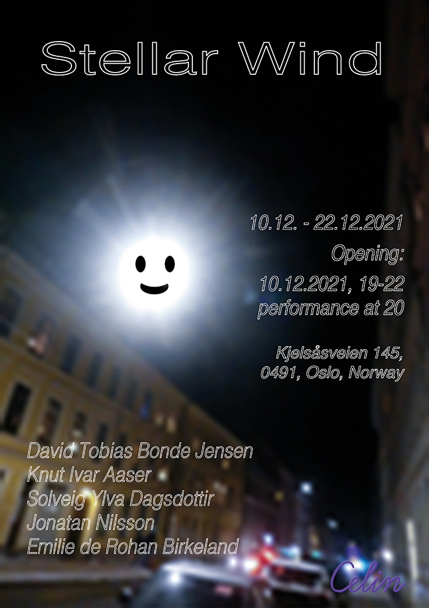

          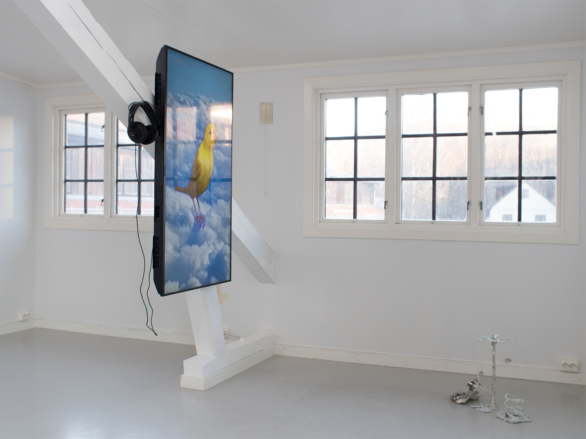
          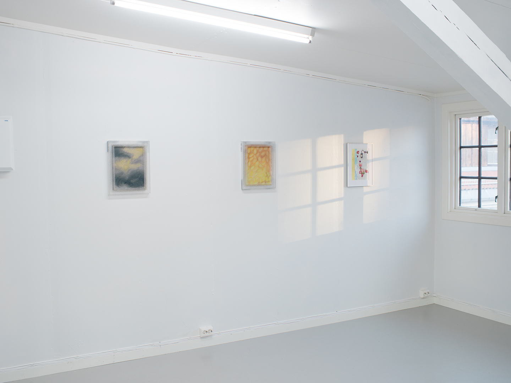
          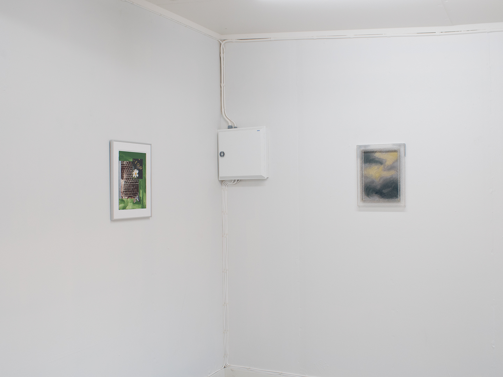
          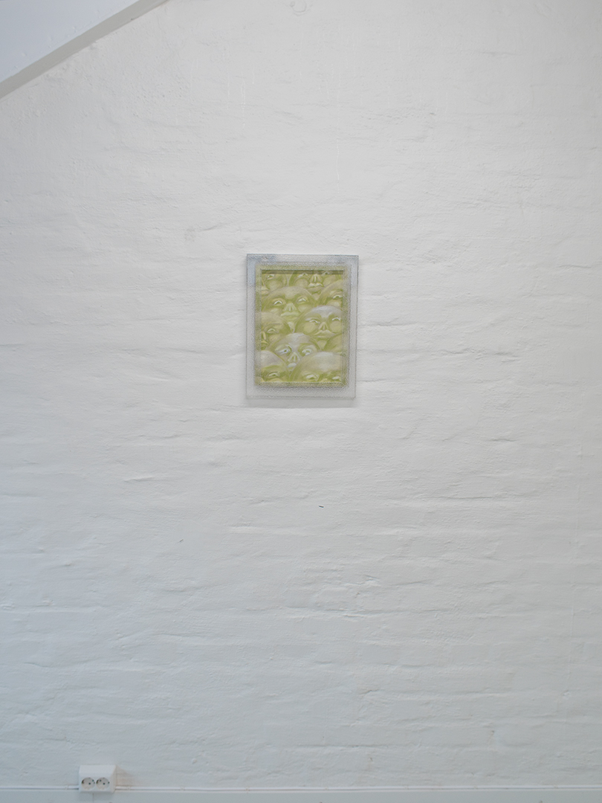
            <span style="font-size: 1vw">Emilie de Rohan Birkeland, <i> Himmellegemer</i>, 2021, Tørrpastell på papp, glass, plexiglass </span>
          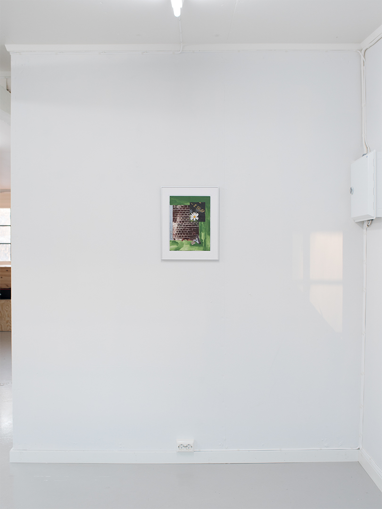
            <span style="font-size: 1vw">Knut Ivar Aaser, <i> Uten title</i>, 2021, Collage, watercolor, linocut </span>
          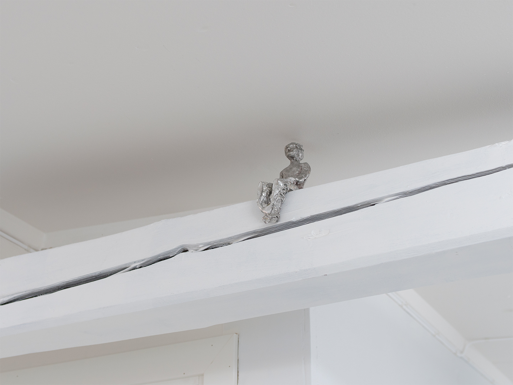
            <span style="font-size: 1vw"> Solveig Ylva Dagsdottir, <i> Skyggespill</i>, 2021, tinn </span>
          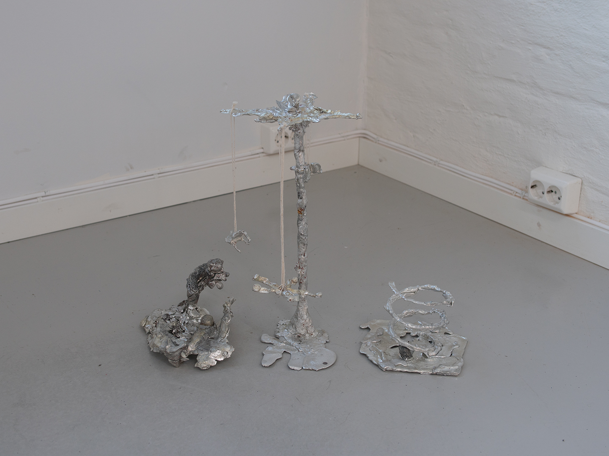
            <span style="font-size: 1vw"> Solveig Ylva Dagsdottir, <i> Skyggespill</i>, 2021, tinn </span>
          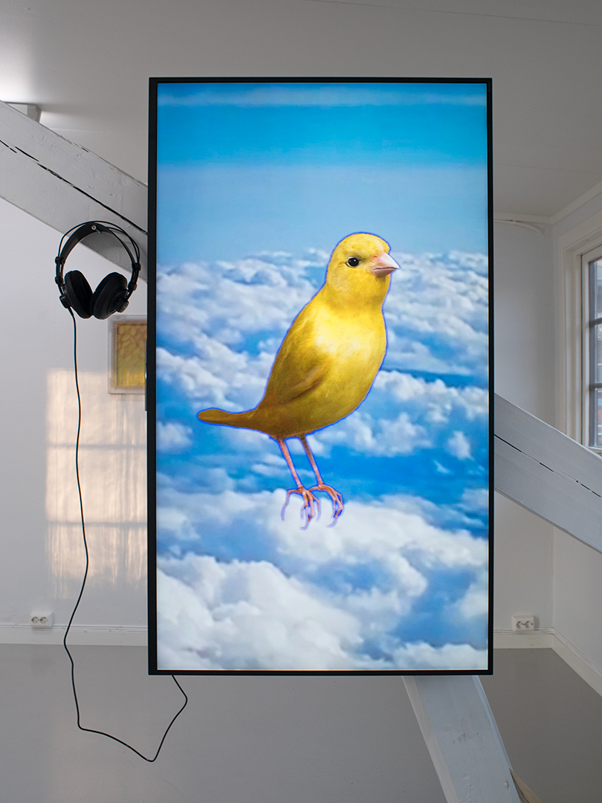
             <span style="font-size: 1vw"> David Tobias Bonde Jensen, <i> Canary.pop</i>, 2021, HD Video og Stereo Audio Loop </span>
          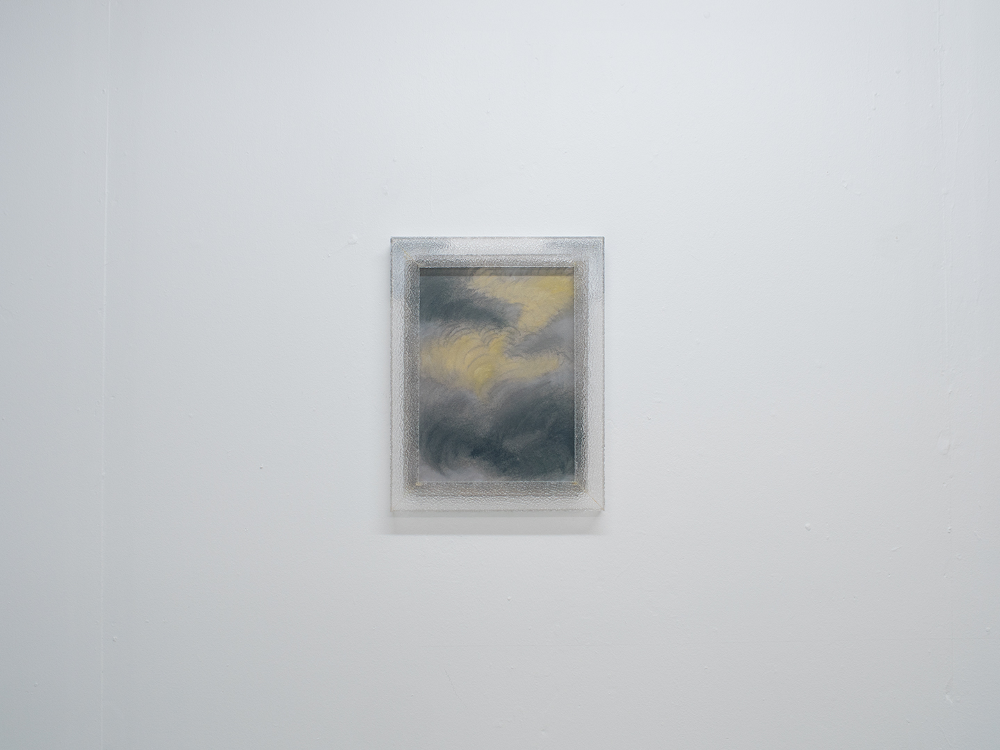
             <span style="font-size: 1vw">Emilie de Rohan Birkeland, <i> Himmelen (II) </i>, 2021 Tørrpastell på papp, glass, plexiglass, 38 x 29,5 cm </span>
          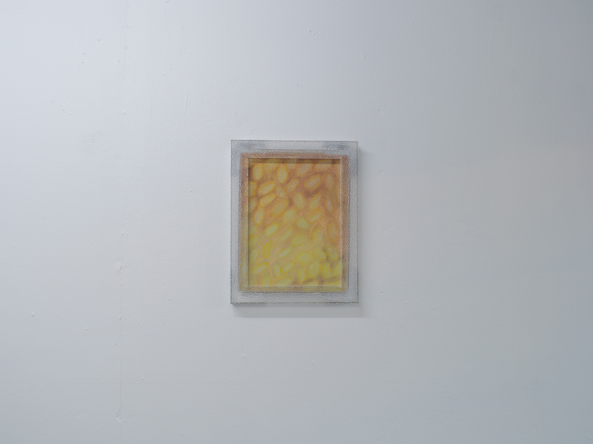
            <span style="font-size: 1vw">Emilie de Rohan Birkeland, <i> Støvet (I) </i>, 2021, Tørrpastell på papp, glass, plexiglass, 38 x 29,5 cm </span>
          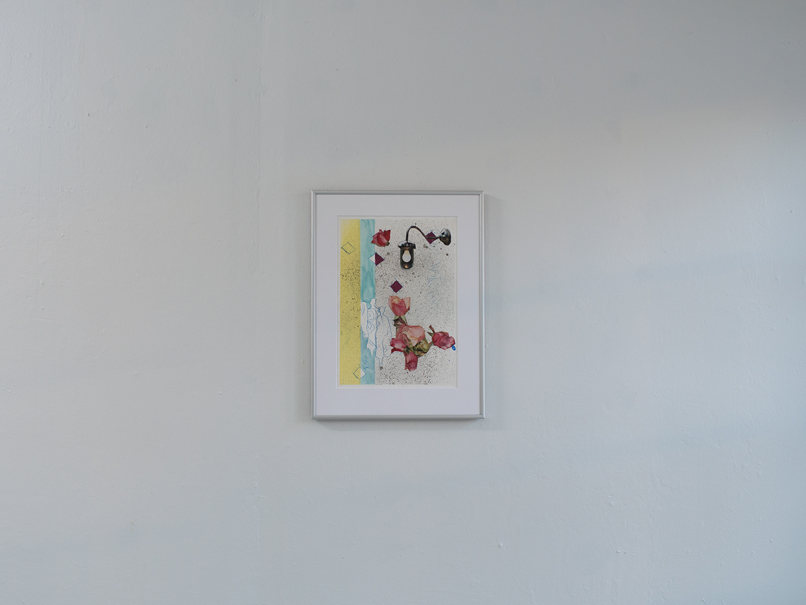
            <span style="font-size: 1vw">Knut Ivar Aaser, <i> Uten title</i>, 2021, Collage, watercolor, monotypie </span>
          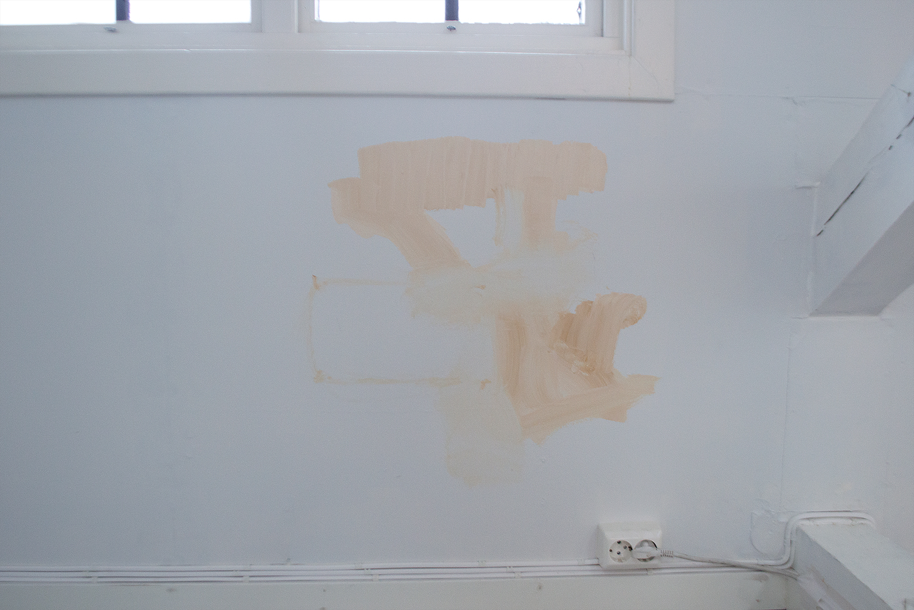
            <span style="font-size: 1vw">Jonatan Nilsson, <i>Frön som följer med in i kabinen</i>, 2021, performance </span>
          <br><br>
<hr>
<br>
</div>
    </body>
</html>


